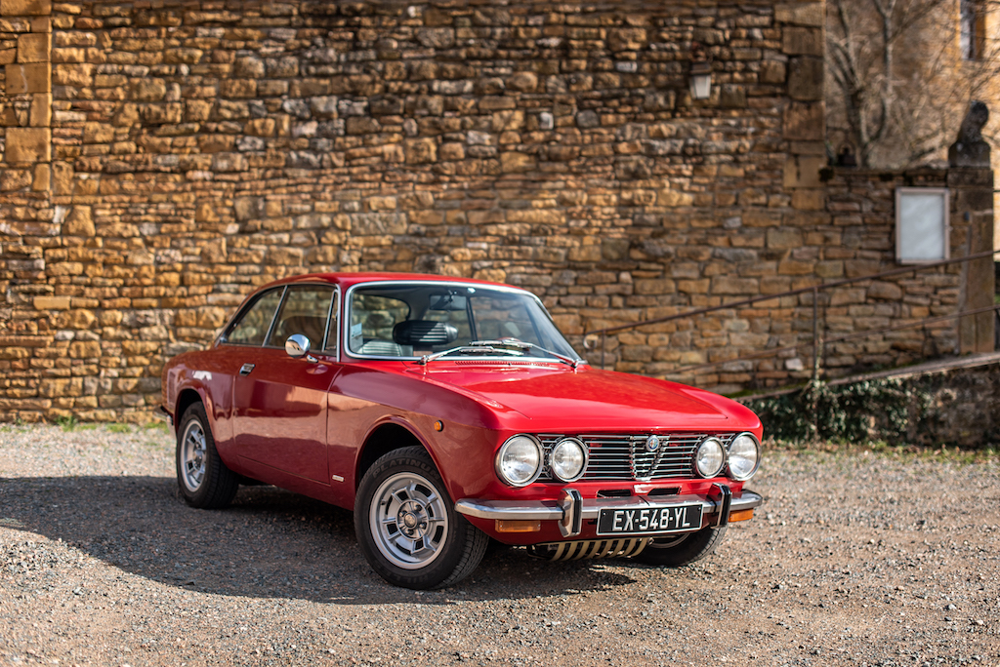
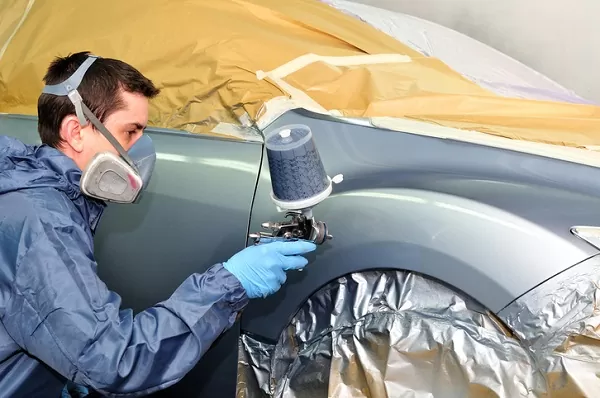
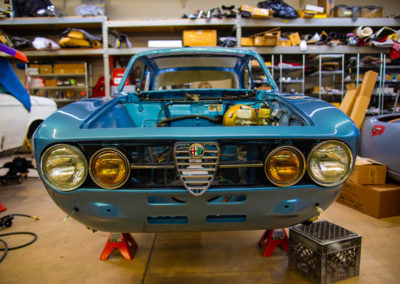

April 25, 2017
Au Garage Frances, chaque voiture est entre les mains d’un passionné. Laurent Frances, pilote sur circuit et expert en mécanique, met son savoir-faire au service de votre véhicule, qu’il s’agisse d’un entretien courant, d’une réparation ou d’une restauration complète. Moderne ou classique, chaque voiture mérite l’excellence.

April 24, 2017
Entretien moteur :
offrez-lui une seconde jeunesse

Un moteur bien entretenu, c’est une voiture qui dure. Vidange, filtres, bougies… Laurent Frances et son équipe prennent soin de chaque détail pour optimiser la performance et la longévité de votre moteur.
April 22, 2017
Pneus :
adhérence et sécurité avant tout

Une bonne tenue de route passe par des pneus en parfait état. Que ce soit pour un simple remplacement ou pour un choix adapté à votre conduite, nous vous conseillons et équipons votre véhicule avec précision.
April 18, 2017
Peinture et carrosserie :
redonnez du cachet à votre voiture

Une rayure, une bosse ou l’envie de raviver l’éclat de votre voiture ? Passionné par l’automobile, Laurent Frances redonne à chaque véhicule son apparence d’origine, avec un travail minutieux et un savoir-faire artisanal.
April 14, 2017
Restauration de véhicules:
un savoir-faire d’exception

Des voitures anciennes aux modèles récents, nous redonnons vie aux véhicules avec passion et précision. Du moteur à la carrosserie, chaque détail est pris en compte pour un résultat fidèle à l’original.
April 11, 2017
Réparations mécaniques :
un diagnostic précis, une réparation efficace

Un bruit suspect, une perte de puissance ? Fort de son expérience, Laurent Frances détecte et résout rapidement les problèmes mécaniques pour que vous retrouviez le plaisir de conduire en toute sérénité.
April 7, 2017
Un expert à votre écoute :
conseils et accompagnement
Un doute sur une panne, un projet de restauration ou simplement besoin d’un avis ? Laurent Frances vous guide avec son expertise et sa passion pour trouver la meilleure solution pour votre véhicule.